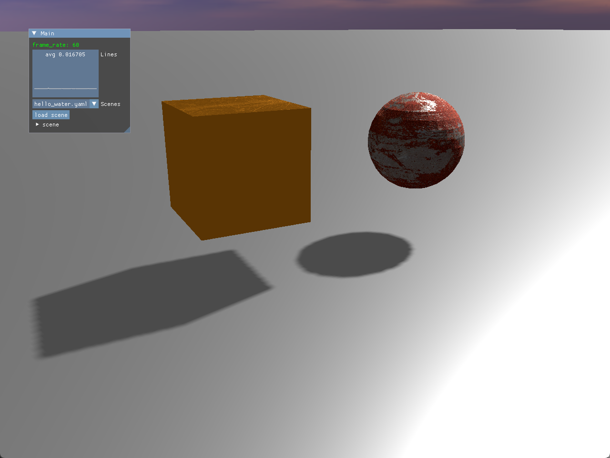

前言
好了，继续我们的Vulkan之旅。
在上一次Vulkan相关的文章中，我们利用subpass实现了延迟渲染的流程。

延迟渲染实现之后，下一步当然是实现阴影了，缺少了阴影的场景看起来还是差点意思。于是乎我自然而然的计划将阴影贴图的实现提上日程。
阴影贴图的原理我这里就不再多介绍了，和OpenGL的实现原理是一致的。我们之前的文章也有介绍过阴影贴图的各种延展应用，比如说CSM（级联阴影贴图）和rsm（反射阴影贴图）。
本来想着的是我都实现过几次阴影贴图了，那这次Vulkan的接入也应该很快才对，结果由于各种各样的生活和工作的事件影响，再加上Vulkan上面有许多的细节需要调整，导致这个效果拖了大半个月才算弄好。
这篇文章简单记录一下我实现过程中踩的各种坑。
Vulkan实现阴影贴图过程中踩的坑
准备深度纹理
在准备深度纹理上就有不少细节需要关注。
VkImageCreateInfo.Usage
首先在创建深度纹理的时候，VkImageCreateInfo中的Usage需要添加采样的Flag位。这一位在延迟渲染和天空盒等没有直接对深度纹理采样的过程中是不需要添加的，只有ColorAttachment的颜色纹理需要添加。但是现在我们需要在光照计算中对阴影贴图（深度纹理）进行采样，所以得加上这一段。
1
| depthImageInfo.usage = VK_IMAGE_USAGE_DEPTH_STENCIL_ATTACHMENT_BIT | VK_IMAGE_USAGE_SAMPLED_BIT;
|
深度纹理的sampler
因为深度纹理需要在shader中进行采样，所以深度纹理需要创建它对应的sampler（之前因为不需要采样所以是不需要的）。
深度纹理的sampler设置和颜色纹理差不多，但是有以下几点需要修改：
- borderColor = VK_BORDER_COLOR_FLOAT_OPAQUE_WHITE: 边缘的颜色设为白色，也就是最大的深度值（1.0）。和颜色不同，颜色纹理一般是设置为BLACK。
- compareEnable = VK_TRUE：需要开启比较，在光照渲染的时候会用到。
- compareOp = VK_COMPARE_OP_LESS： 比较的方法，这里用LESS的方法，和pipeline中的那个类似
详细的代码如下：
1
2
3
4
5
6
7
8
9
10
11
12
13
14
15
16
| VkSamplerCreateInfo samplerInfo{};
samplerInfo.sType = VK_STRUCTURE_TYPE_SAMPLER_CREATE_INFO;
samplerInfo.magFilter = VK_FILTER_LINEAR;
samplerInfo.minFilter = VK_FILTER_LINEAR;
samplerInfo.mipmapMode = VK_SAMPLER_MIPMAP_MODE_LINEAR;
samplerInfo.addressModeU = VK_SAMPLER_ADDRESS_MODE_CLAMP_TO_EDGE;
samplerInfo.addressModeV = VK_SAMPLER_ADDRESS_MODE_CLAMP_TO_EDGE;
samplerInfo.addressModeW = VK_SAMPLER_ADDRESS_MODE_CLAMP_TO_EDGE;
samplerInfo.anisotropyEnable = VK_FALSE;
samplerInfo.borderColor = VK_BORDER_COLOR_FLOAT_OPAQUE_WHITE;
samplerInfo.compareEnable = VK_TRUE;
samplerInfo.compareOp = VK_COMPARE_OP_LESS;
if (vkCreateSampler(VulkanGraphicsDevice::GetGraphicsDevice()->GetDevice(), &samplerInfo, nullptr, &m_sampler) != VK_SUCCESS) {
throw std::runtime_error("failed to create texture sampler!");
}
|
深度纹理的输入格式
在渲染阴影贴图纹理的renderpass中，我们要设定阴影贴图的attachment.finalLayout，这个finalLayout可能是VK_IMAGE_LAYOUT_DEPTH_STENCIL_READ_ONLY_OPTIMAL，或者是VK_IMAGE_LAYOUT_DEPTH_STENCIL_ATTACHMENT_OPTIMAL，这两个layout是没有办法作为输入传到shader中的。
为了让光照计算阶段的shader能够读取阴影贴图纹理，我们需要在光源渲染完阴影贴图后（vkCmdEndRenderPass）以及光照计算之前（vkCmdBeginRenderPass）将纹理的layout装换，这就需要使用到pipelineBarrier。
转换的代码如下所示：
1
2
3
4
5
6
7
8
9
10
11
12
13
14
15
16
17
18
19
20
21
22
23
24
25
26
|
VkImageMemoryBarrier imageMemoryBarrier = {};
imageMemoryBarrier.sType = VK_STRUCTURE_TYPE_IMAGE_MEMORY_BARRIER;
imageMemoryBarrier.oldLayout = VK_IMAGE_LAYOUT_DEPTH_STENCIL_READ_ONLY_OPTIMAL;
imageMemoryBarrier.newLayout = VK_IMAGE_LAYOUT_SHADER_READ_ONLY_OPTIMAL;
imageMemoryBarrier.srcQueueFamilyIndex = VK_QUEUE_FAMILY_IGNORED;
imageMemoryBarrier.dstQueueFamilyIndex = VK_QUEUE_FAMILY_IGNORED;
imageMemoryBarrier.image = m_depthTexture->m_image;
imageMemoryBarrier.subresourceRange.aspectMask = VK_IMAGE_ASPECT_DEPTH_BIT;
imageMemoryBarrier.subresourceRange.baseMipLevel = 0;
imageMemoryBarrier.subresourceRange.levelCount = 1;
imageMemoryBarrier.subresourceRange.baseArrayLayer = 0;
imageMemoryBarrier.subresourceRange.layerCount = 1;
imageMemoryBarrier.srcAccessMask = VK_ACCESS_DEPTH_STENCIL_ATTACHMENT_WRITE_BIT;
imageMemoryBarrier.dstAccessMask = VK_ACCESS_SHADER_READ_BIT;
vkCmdPipelineBarrier(
frameInfo.commandBuffer,
VK_PIPELINE_STAGE_EARLY_FRAGMENT_TESTS_BIT,
VK_PIPELINE_STAGE_FRAGMENT_SHADER_BIT,
0,
0, nullptr,
0, nullptr,
1, &imageMemoryBarrier
);
|
这里比较关键的就是：
- oldLayout/newLayout: VK_IMAGE_LAYOUT_DEPTH_STENCIL_READ_ONLY_OPTIMAL -> VK_IMAGE_LAYOUT_SHADER_READ_ONLY_OPTIMAL
- srcAccessMask/dstAccessMask: VK_ACCESS_DEPTH_STENCIL_ATTACHMENT_WRITE_BIT -> VK_ACCESS_SHADER_READ_BIT
渲染深度纹理
好了，关于纹理准备部分大概的几个关键点就是这些了（可能还有些细碎的记不太清楚了。。。），接下来就是生成和使用深度纹理的部分了。
viewport和scissor
在我们每个渲染system进行渲染之前，都会BeginRenderPass，在这个操作之后会设定viewport和scissor的大小。
之前都是默认使用swapchain的extent大小，但是在渲染阴影贴图的时候需要将viewport和scissor改为阴影贴图的尺寸，否则渲染出来的阴影贴图就要么不全，要么超出了窗口尺寸报错了。
代码如下：
1
2
3
4
5
6
7
8
9
10
11
12
13
14
15
16
17
18
19
20
21
22
23
24
25
26
27
28
29
30
31
32
33
|
renderAreaExtent = {SHADOW_RESOLUTION, SHADOW_RESOLUTION};
void VulkanRenderSystem::BeginRenderPass(VkCommandBuffer commandBuffer, VkFramebuffer framebuffer)
{
VkRenderPassBeginInfo renderPassInfo = {};
renderPassInfo.sType = VK_STRUCTURE_TYPE_RENDER_PASS_BEGIN_INFO;
renderPassInfo.renderPass = m_renderPass;
renderPassInfo.framebuffer = framebuffer == VK_NULL_HANDLE ? m_framebuffer : framebuffer;
renderPassInfo.renderArea.offset = { 0, 0 };
renderPassInfo.renderArea.extent = renderAreaExtent;
renderPassInfo.clearValueCount = static_cast<uint32_t>(m_clearValues.size());
renderPassInfo.pClearValues = m_clearValues.data();
vkCmdBeginRenderPass(commandBuffer, &renderPassInfo, VK_SUBPASS_CONTENTS_INLINE);
VkViewport viewport{};
viewport.x = 0.0f;
viewport.y = 0.0f;
viewport.width = static_cast<float>(renderAreaExtent.width);
viewport.height = static_cast<float>(renderAreaExtent.height);
viewport.minDepth = 0.0f;
viewport.maxDepth = 1.0f;
VkRect2D scissor{{0,0}, renderAreaExtent};
vkCmdSetViewport(commandBuffer, 0, 1, &viewport);
vkCmdSetScissor(commandBuffer, 0, 1, &scissor);
}
|
上面示例代码还处理了clearValue，就相当于OpenGL中的glClear和glClearColor，这里要对应我们的attachment的数量给出对应的clearValue数量，以及合适的clearColor值。
使用深度纹理
最后是使用深度纹理这部分了，这里主要有两点：
使用sampler2DShadow代替sampler2D
在渲染的光照阶段shader中传入阴影贴图：
1
2
3
|
layout(set = 1, binding = 4) uniform sampler2DShadow shadowmap_tex;
|
这里使用的是sampler2DShadow这种形式，sampler2DShadow是专门用于阴影贴图（深度纹理）的采样，存储的是单通道深度值（而非颜色）。其实这并不是一个Vulkan的新特性，在OpenGL中就已经有这样的用法。
在处理阴影贴图的时候，sampler2DShadow的应用方法如下：
1
| shadow += texture(shadowmap_tex, vec3(proj_coord.xy, proj_coord.z-0.01));
|
texture传入sampler2DShadow纹理的时候，除了传入采样坐标xy之外，还需要额外传入一个深度值。函数会将采样阴影贴图得到的深度和传入的深度值进行对比，返回一个表示阴影的浮点数（0 表示完全阴影，1 表示完全光照）。
这样实现的有着高效的优点：
-
硬件加速：sampler2DShadow 是专门为阴影贴图采样设计的，现代图形硬件针对这种类型的采样进行了优化。当使用 sampler2DShadow 时，硬件可以直接在纹理查找阶段进行深度比较，这使得阴影计算更加高效。相比之下，如果使用 sampler2D 手动实现相同的阴影计算，需要额外的步骤来读取深度值并进行比较，这会增加计算量和内存访问。
-
减少带宽需求：由于硬件在采样过程中直接进行深度比较，减少了将深度值从纹理中读取到着色器中进行处理的需求，从而降低了内存带宽的使用。这对于资源受限的设备（如移动设备）尤为重要，可以在不牺牲太多性能的情况下实现阴影效果。
-
更好的阴影效果：硬件优化的采样算法可以有效地减少阴影走样（如锯齿和闪烁）。通过使用 sampler2DShadow，开发者可以利用硬件的抗锯齿功能，获得更加平滑和自然的阴影效果。
注意深度（z）的范围！
最后这一点可能是我被坑的最惨的一点，也是让我写这篇文章的源动力之一。下面是我在OpenGL中实现的光照计算阴影的部分代码：
1
2
3
4
5
6
7
8
9
10
11
12
13
14
|
vec4 frag_pos_light_space = light_space_matrix * frag_world_pos;
vec3 proj_coord = frag_pos_light_space.xyz / frag_pos_light_space.w;
proj_coord = proj_coord * 0.5 + 0.5;
float current_depth = proj_coord.z;
if (proj_coord.z > 1.0 || proj_coord.z < 0.0) return 1.0;
|
下面是Vulkan中的
1
2
3
4
5
6
7
8
9
10
11
12
13
14
15
|
vec4 frag_pos_light_space = light_space_mat * frag_world_pos;
vec3 proj_coord = frag_pos_light_space.xyz / frag_pos_light_space.w;
proj_coord.xy = proj_coord.xy * 0.5 + 0.5;
if (proj_coord.z > 1.0 || proj_coord.z < 0.0) return 1.0;
float shadow = 0.0f;
|
细心的你一定看出最重要的区别了，那就是vulkan中的这一段：
proj_coord.xy = proj_coord.xy * 0.5 + 0.5;
为什么OpenGL中没有指定xy呢？
我们这一步的目的是为了将坐标从NDC的坐标系[-1,1]下转到[0,1]，重点在于：
OpenGL在NDC坐标系下，深度值（z）的范围是[-1,1]，而Vulkan中是[0,1]。
这句话我在之前也听说过，但是并没有在这里关联起来，因此在一开始Vulkan的实现中我也将proj_coord.z的值进行了*0.5+0.5的映射。但是Vulkan中一开始proj_coord.z的值就是在[0,1]区间的，这么一映射导致了阴影结果完全不对。
在好几天的百思不得其解，仔细筛查后，终于发现了这个问题，改正之后阴影完美的绘制出来了。被这么一个小地方卡主这么久真的是让我哭笑不得，打算写一篇文章记录一下。
结语

好了，以上就是我在实现阴影贴图的一些小记录了。效果虽然和之前OpenGL实现的没什么太大区别，但是真的也是让我对Vulkan的理解也更加深入了。哈哈，坑踩多了慢慢也会变成专家，后面会继续将Vulkan的内容做下去。
既然实现了阴影贴图，那csm和rsm这些延伸内容也会顺便实现了，如果没什么特别需要记录的话就到时简短的写一篇文章记录一下就行了。